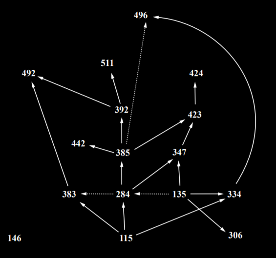

Computer Science Requriements
-
CS-115 Introduction to Computer Science
No prerequisites
CS-146 Introduction to Web Programming and Project Development
No prerequisites
CS-284 Data Structures
Prerequisites: CS-115
Corequisites: CS-135
CS-306 Introduction to IT Security
Prerequisites: CS-135
CS-347 Software Development Process
Prerequisites: CS-135 , CS-284
CS-383 Computer Organization and Programming
Corequisites: CS-284
CS-385 Algorithms
Prerequisites: CS-284
CS-392 Systems Programming
Prerequisites: CS-385
CS-423 Senior Design I
Prerequisites: CS-347 , CS-385
CS-424 Senior Design II
Prerequisites: CS-423
CS-442 Database Management
Prerequisites: CS-385
CS-485 Societal Impact of Information Technologies
No prerequisites
CS-492 Operating Systems
Prerequisites: CS-383 , CS-392
CS-496 Principles of Programming Languages
Prerequisites: CS-334
Corequisites: CS-385
CS-511 Concurrent Programming
Prerequisites: CS-392
Mathematics Requriements
-
MA-121 Differential Calculus
No prerequisites
MA-122 Integral Calculus
Prerequisites: MA-121
MA-123 Series, Vectors, Functions, and Surfaces
Prerequisites: MA-122
MA-124 Calculus for Functions of Two Variables
Prerequisites: MA-123
CS-135 Discrete Structures
No prerequisites
MA-222 Probability and Statistics
Prequisites: MA-124
MA-331 Intermediate Statistics
Prerequisites: MA-222
CS-334 Automata and Computation
Prerequisites: CS-115 , CS-135
Management Requriement
-
BT-353 Project Management
No prerequisites

A diagram for computer science requisites. Solid lines are pre-reqs; dotted lines are co-reqs.